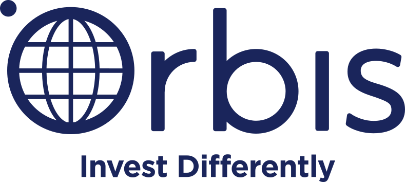

Experience
Software Engineer II [Internally Promoted]
June 2020 – Present | Seattle, USA & Vancouver, Canada
- Design and build RAG-based, highly available, secure, scalable, distributed Artificial Intelligence systems in a microservices architecture
- Engineer end-to-end GenAI infrastructures like Chat Bots, Summarisations, Feedback Analysis, coordinating with Applied & Research Scientists
- Delivered an end-to-end GenAI evaluation infrastructure that ingests, evaluates, and scores production traffic in real time to surface model drifts early and create improvement feedback loops used by product managers
- Productionized GenAI evaluators including LLM-as-judge, domain classifiers, prompt analysis, thematic analysis, racial/gender bias analysis for deeper model understanding
- Wrote high-quality, efficient, testable APIs in Java with multiple downstream dependencies called on the order of four million times per week from the AWS Payment Console
- Delivered a customized, granular authorization model for the AWS Payment Console for role-based access control (RBAC)
- Designed and built highly available, secure, fault-tolerant, scalable, distributed systems on serverless infrastructure, running end-to-end encryption of customer banking and payment-method information, with authentication and authorization as the top priorities
- Own the DevOps during on-calls and maintain systems based on real-time customer data and demanding service-level agreements
- Contribute to planning, design, implementation, testing, security, and process improvement as Scrum Master, Ops Champion, and Application Security Guardian
Skills Native AWS infrastructure (Compute, Networking, Security, Observability, Queueing, APIs Integration, Data Stores, Generative AI, Model Inference), Distributed Computing, Automated Testing, CI/CD Pipelines, Prompt Engineering, Architecture & Backend Design, and On-call Production Ops
Software Engineer (Cloud & Containerization)

May 2019 – August 2019 | Vancouver, Canada
- Built a .NET Global CLI tool to containerize an organization-wide microservice using Docker
- Evaluated the impact of deploying the microservice to AWS EKS vs. in-house servers using benchmarked performance and bandwidth tests
- Redesigned the front-end (UI) and back-end (REST endpoints and database interactions) for the microservice in Angular and C#, respectively
- Refactored several in-house applications to use updated Microsoft TFS APIs, increasing automation during deployment
Skills Cloud deployment (AWS & Kubernetes), containerization (Docker), front-end design (Angular), REST APIs, and .NET (C#)
Software Engineer (Embedded Hardware Programming)
January 2018 – July 2018 | Zurich, Switzerland
- Developed firmware from scratch in C++ for an embedded platform that downloaded telemetry and flight logs from drones over serial, forwarded data to a client application over UDP, and kept collection paths reliable end-to-end
- Designed and implemented a multi-layered communication protocol on top of UDP between the drone, the embedded platform, and a Linux system, using checksums for packet integrity and achieving a 99% reduction in end-to-end data corruption during transmission
- Built an asynchronous Linux client application from scratch to receive, parse, and persist data flowing through that pipeline
- Improved successful telemetry download from the drone from roughly 50% to nearly 100% through the new software stack and communication protocols
- Implemented and deployed Boost-based unit, end-to-end, and simulation tests in Jenkins to validate the full data-flow chain
- Wrote and refactored Python scripts to support data analysis and parsing
- Deployed a dedicated data-parsing host with Cron jobs that ran those scripts to summarize and plot drone telemetry and flight logs
Skills Embedded C++, asynchronous I/O, serial & UDP networking, protocol design & integrity, Linux application development, Boost testing, Jenkins, Python (analysis & parsing), Git, and Cron automation
Teaching Assistant (Systematic Program Design)
 UBC Department of Computer Science
UBC Department of Computer Science
September 2017 – December 2017 & September 2018 – December 2018 | Vancouver, Canada
- Organized 3 weekly lab sections of 30 students each by presenting a lecture review and grading pre-lab and final submissions
- Assisted 150+ students during lectures and office hours by answering their questions and evaluating their code for correctness & efficiency
- Invigilated several examinations and answered student queries on the online discussion board
- Graded 30+ problem sets and assignments on a weekly basis
Skills Functional programming, design patterns, recursion (self, mutual, tail, and generative), and graph searching